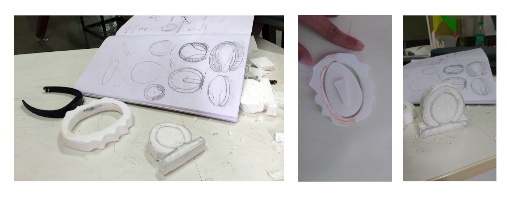
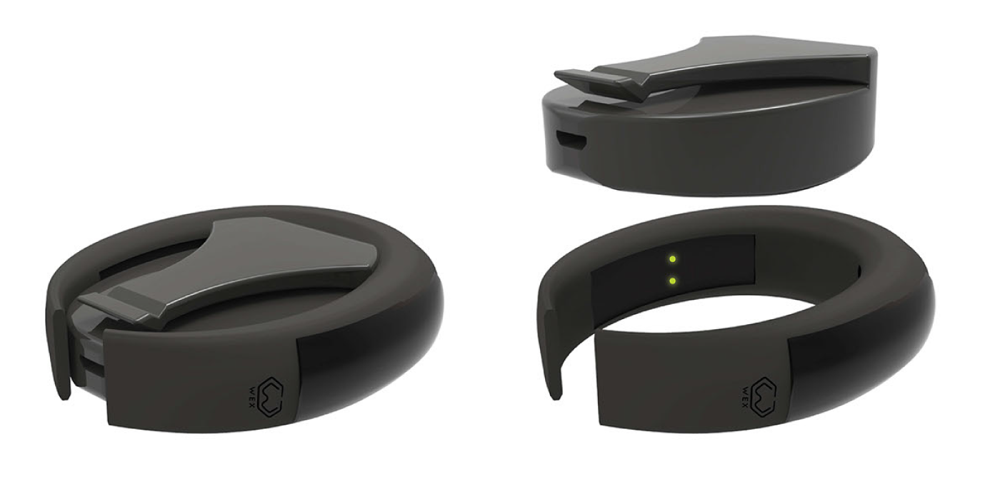
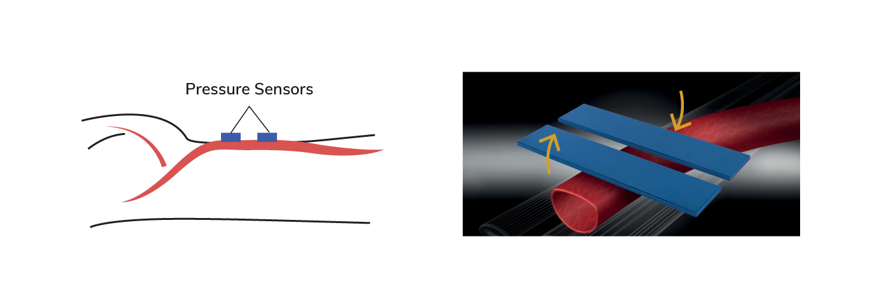
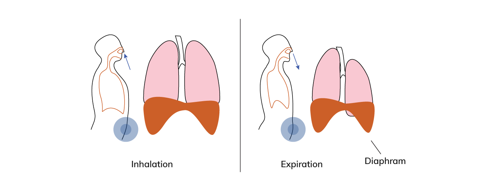
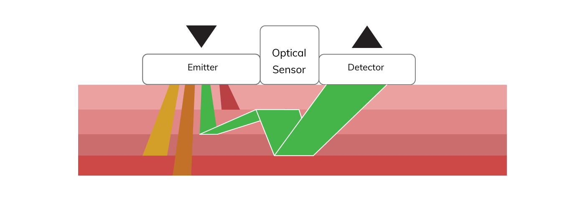
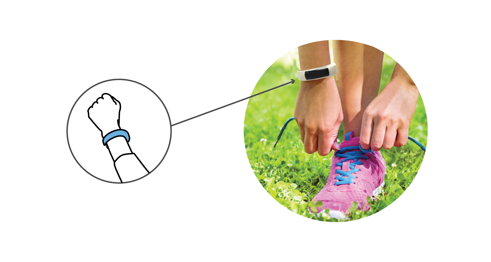
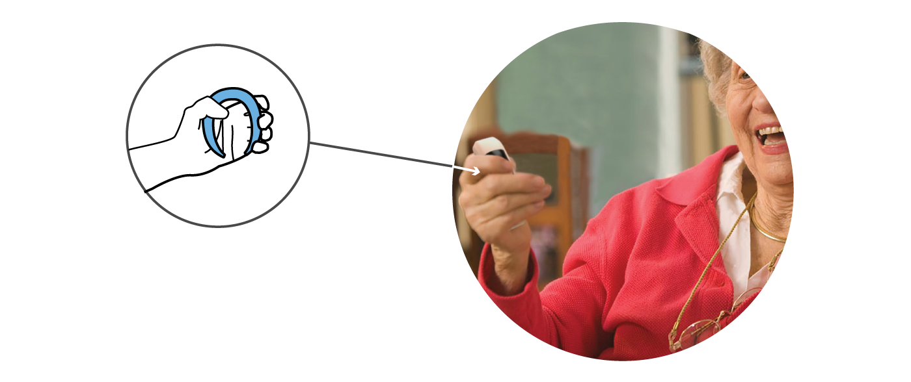
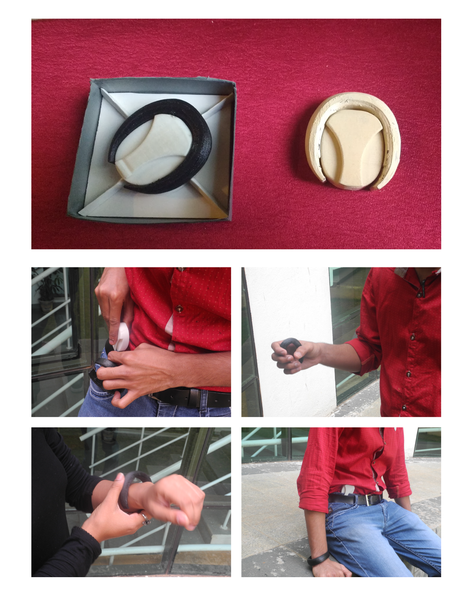
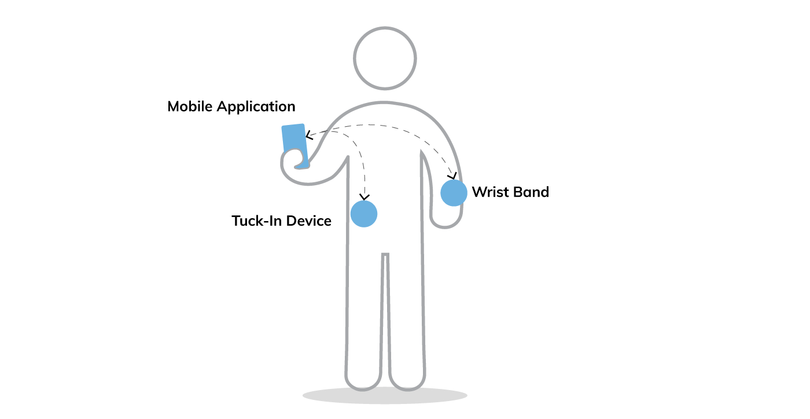
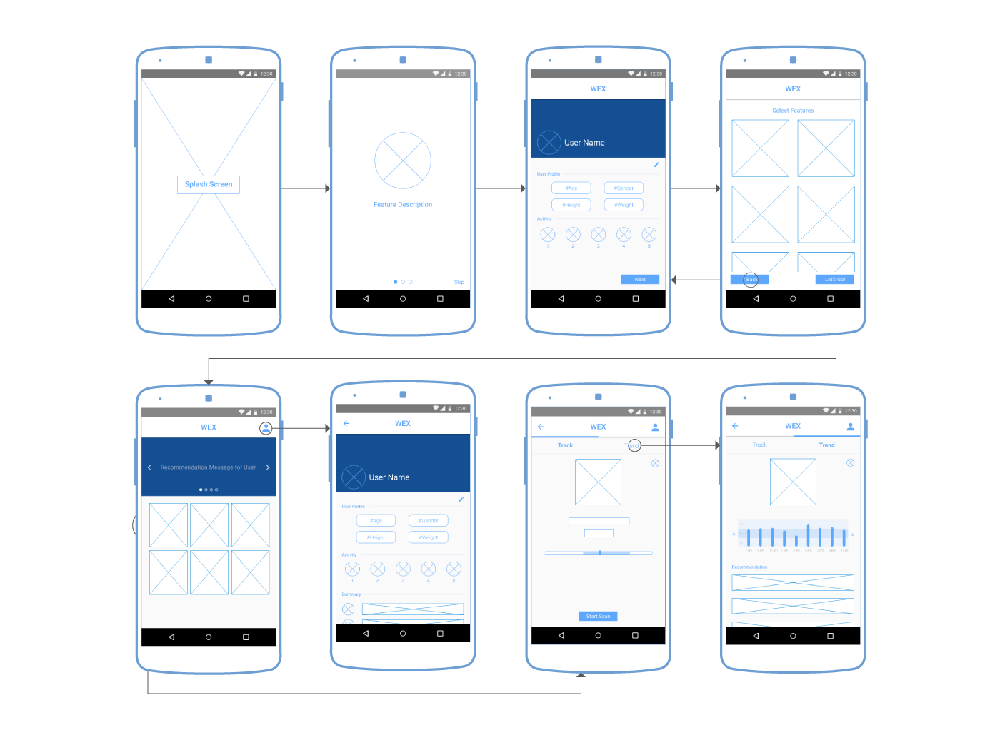

Design a holistic health wearable
IIT-G & TATA Wearable Design Challenge
Problem Statement
To Design a modular holistic health wearable. The focus has to be to optimise the wearable design for comfort, non-invasiveness, ease of use, communication and efficiency. The wearable should sense/measure the following:
- Sunlight exposure
- Abdominal sounds, signals, and movements
- Heart rate variability
- Posture/stretching
- Breathing
- Blood Pressure
The sensors DO NOT have to be developed by the participant but adequate research needs to be done on available sensors that can be part of your wearable.
My Role
This project was a finalist entry (amongst top 7 teams out of total 59 teams) for a wearable design competition conducted by IIT - Guwahati and TATA in 2016. We were a team of four students from different disciplines at NID Bangalore. My contribution mainly involved in user and market research for health wearables and their sensors, which mainly comprised of secondary research - reading literary research papers, comparative study of existing wearables; and designing the mobile application,
Design Process
Research
We ideated about the possible ways to wear a health wearables, alongwith exploring different forms and mechanisms to design a wearable, which can measure all the required parameters.
To get a better understanding we studied available sensor technologies, which can be used for wearables, in the market. After finalising on the general idea of wearing the wearable, we started making thermocol mockup of the desired form.
Mapping: Video Viewing Experiences & Capabilities.
Design Considerations
Considering the usability of the wearable and the range of types of users including Indian ladies wearing sarees,aged people,young folks who wish to make a style statement through the wearble, the final concept is a wrist band with removable device which can then be tucked-in near the waist.

Monitoring blood pressure
Two arrays of sensors are placed along the same artery to pick up signals. The distance between two sensors and the time blood takes to travel between them is measured to obtain the pulse wave velocity. Pulse wave velocity is directly related to blood pressure.
Breathing and posture
The breathing rate is measured by detecting the change in pressure as a result of the movement of the diaphragm. For posture the devices needs to be calibrated for neutral or idle posture initially. The change in posture is detected when the pressure measured is below the calibrated one and haptic feedback is given to the user to correct his posture.
Pulse rate
The pulse is detected with help of LED and photodiode sensors. The LED light is shined into the skin. The scattered light is detedcted by the photodiode and the pulse rate is calculated. The heart rate is in direct relation with the pulse rate.
Abdominal sounds

Vibration sensor calculates abdominal sounds caused by the movement between the intestinal contents.
Usecase scenarios Wrist band calculates sun exposure, heart rate and blood pressure.

Tuck-in module calculates abdomenal sounds, posture and breathing.
Wrist band is a good stress buster and muscle strengthner when used as a hand grip exerciser.
Credits: All the illustration made by Omkar Khadamkar (Team member).
Prototyping and Evaluation
Material Explorations
3D printing was used to create the prototype of WEX and usability of WEX was studied by asking different users to wear it for a day.
Data flow in ecosystem
User can track the status and check out the trends using WEX mobile phone application
Mobile Application : WEX
Wireflow Diagram
User can track the status and check out the trends using WEX mobile phone application
 Video PrototypeKey Takeaways
- Learned the skill of working in an interdesciplinary design team, where each individual brought different perspective to the discussion table.
- Got exposure to different types of softwares e.g. 3D (Rhinocerous; Keyshot and SketchUp) and Adobe Creative Suite, to create the product renders and aninations.
- Had a great experience travelling to and presenting our work at Indian Institute of Technology, Guwahati.